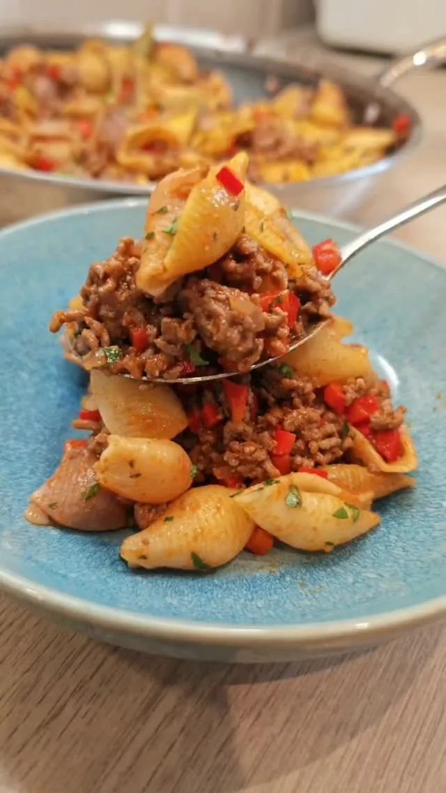

15-Minuten Pasta mit Hackfleisch & Paprika
Schnell gemacht, super einfach und richtig lecker! Perfekt für ein schnelles Mittagessen oder ein entspanntes Feierabendgericht. Herzhaft, würzig und richtig sättigend – genau das, was man manchmal braucht!
- 4 Portionen
- 9 Zutaten
- 6 Schritte
Zur Zubereitung Video ansehen ↗
Zutaten
Zubereitung
- Die Pasta kochen und etwas Nudelwasser aufheben.
- Zwiebel und Knoblauch in der Pfanne anbraten, Gewürze dazugeben.
- Das Hackfleisch kräftig anbraten, bis es durchgegart ist.
- Tomatenmark einrühren, anschließend Paprika und etwas Nudelwasser hinzufügen.
- Kurz einkochen lassen, dann die Pasta unterheben und gut vermengen.
- Mit frischer Petersilie toppen und genießen.